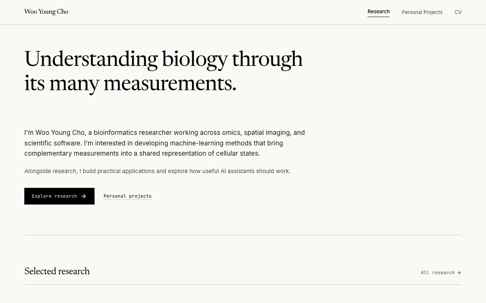
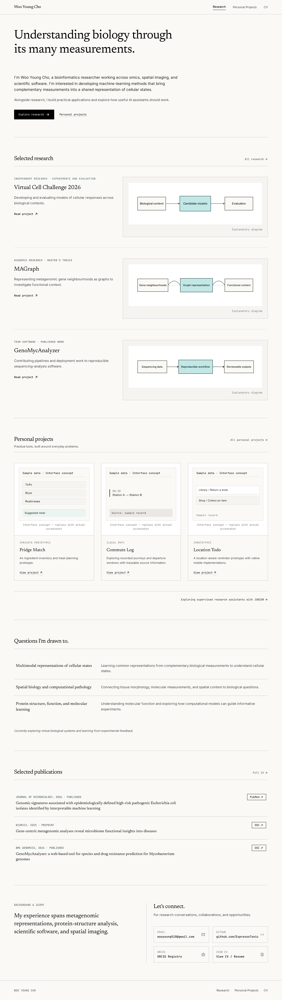
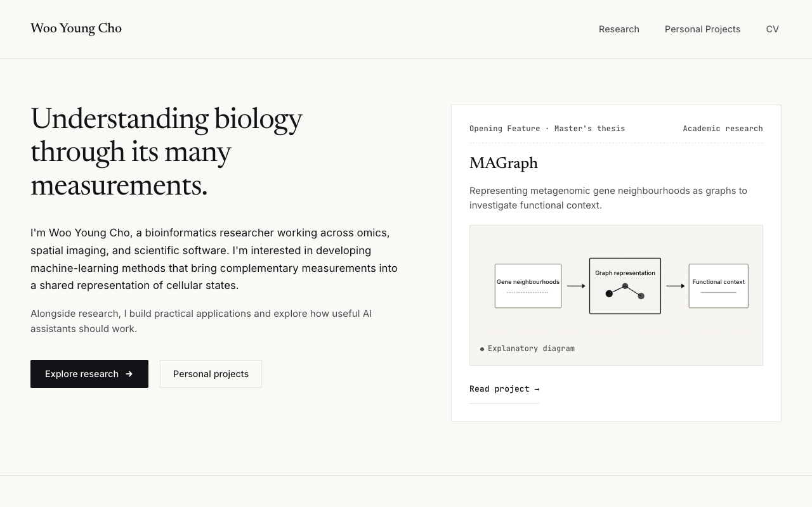
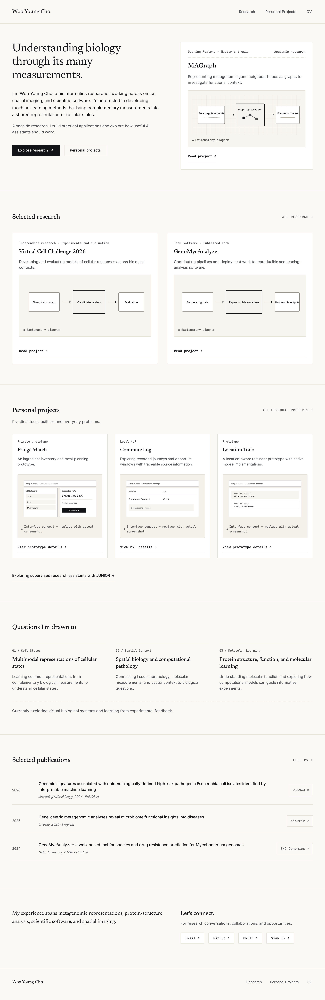

A · Editorial Index
Large typographic opening, then open research rows.

Full desktop image

Desktop and mobile concepts for review. Recommendation: B, which brings a research project into the opening. These are design references; the website application remains unchanged.
Diagrams and sample interfaces are placeholders. HTML examples need internet access for their generated font/CSS dependencies; project navigation is illustrative.Large typographic opening, then open research rows.


Introduction and featured MAGraph project share the desktop opening.

